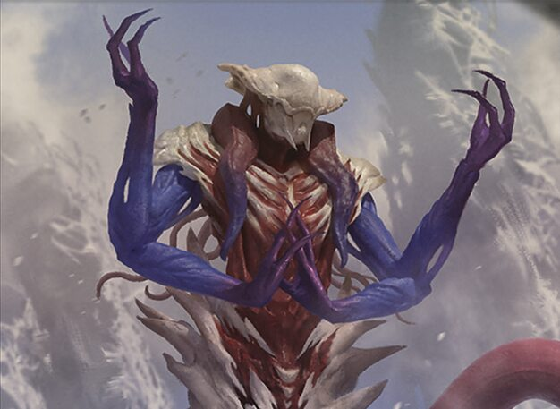

The Ur-Dragon
Top tier
The deck wins 38% of its games – the average at a four-player table is 25%.
- Tier · Elo
- S 1709 #5 of 64 in the rankings up to €300
- Win rate
- 38% 107 wins in 283 games, 90% certain between 33 and 43%
- Placements
- 125%10×
- 225%10×
- 322%9×
- 428%11×
Create a new deck there and paste the list when importing.
- Price
- €285.15of €300.00
- Games
- 283in 28 tournaments
- Cards
- 10035 lands, 9 basic
- Game Changer
- 0at most 3 allowed
- Combos
- 1complete in the deck
- Rules check
- Passed100 cards, colors, banlist
At most €300 including the commander. If prices rise above that, the shopping list is rebuilt automatically.
The shopping list was rebuilt with current prices on Nov 2, 2026: the tested version had risen to €300.23, above €300.00. Win rate and placement come from the tested version.
Strengths and weaknesses
From 263 analysed games in 26 tournaments (with the lists played in the tournament). Games that hit the time limit don't count, just like in the rankings. Values in brackets: average of all decks in the same price class. Hover over or tap a point to see the exact numbers.
Play style: wins through combat – 81% of the damage to opponents is combat damage · How it wins: 18% of wins by surviving (knocked out at most one opponent itself, the others took each other out) – all-deck avg: 33%
Strengths
- Attacks get through certain10% of attackers blocked (all-deck avg: 18%) · 2426 attackers in 263 games
- Applies a lot of pressure certainavg 40 damage to opponents per game (all-deck avg: 29) · 263 games
- Clears the table certaineliminates 0.95 opponents per game on average (all-deck avg: 0.62) · 263 games
- Wins fast certainwins on average already on its 11th own turn (all-deck avg: 12th) · 95 wins
Weaknesses
- Depends on its commander hintonly 12% wins without it, 48% with it · 88 games without, 175 with commander
- Drops out early certainin losses on average already on its 9th own turn (all-deck avg: 10th) · 168 losses
Who it beats
Win rate at tables where this commander played too – only opponents in the current rankings with at least 20 shared games. The average at a four-player table is 25%.
Often beats

45%of 22 40%of 30
40%of 30 37%of 30
37%of 30
Struggles against
 18%of 28
18%of 28 21%of 39
21%of 39 23%of 35
23%of 35
Commander (1)
- The Ur-Dragon€31.87
Creatures (34)
- Terror of the Peaks RemovalCombo€25.09
- Tiamat€16.86
- Ureni of the Unwritten€16.79
- Goldspan Dragon€9.50
- Two-Headed Hellkite Card draw€9.32
- Utvara Hellkite€5.36
- Miirym, Sentinel WyrmCombo€4.73
- Morophon, the BoundlessAI weak€4.33
- Hellkite Courser€4.00
- Scion of Draco€3.55
- Scion of the Ur-Dragon€3.08
- Birds of Paradise Ramp€3.00
- Dragonlord Dromoka€2.19
- Hellkite Tyrant€2.05
- Scourge of Valkas Removal€1.90
- Rith, Liberated Primeval€1.75
- Scalelord Reckoner Removal€1.63
- Smaug, Wicked Worm Card draw€1.40
- Dragonspeaker Shaman€1.29
- Ignoble Hierarch Ramp€1.23
- Sarkhan, Soul Aflame€1.04
- Rivaz of the Claw Ramp€0.88
- Bladewing the RisenCombo€0.80
- Scavenger Regent // Exude Toxin Board wipe€0.46
- Lathliss, Dragon Queen€0.45
- Savage Ventmaw Ramp€0.44
- Ramos, Dragon Engine Ramp€0.43
- Atarka, World Render€0.40
- Scaled Nurturer Ramp€0.40
- Silumgar, the Drifting Death€0.39
- Sunscorch Regent€0.26
- Dragonlord's Servant€0.15
- Deathbringer Regent Board wipeAI weak€0.13
- Korlessa, Scale Singer€0.11
Instants (4)
- Heroic Intervention Protection€8.38
- Assassin's Trophy Removal€1.22
- Swords to Plowshares Removal€1.05
- Path to Exile Removal€1.02
Sorceries (7)
- Three Visits Ramp€4.80
- Nature's Lore Ramp€2.28
- Kodama's Reach Ramp€0.72
- Farseek RampAI weak€0.63
- Crux of Fate Board wipe€0.42
- Cultivate Ramp€0.29
- Rampant Growth Ramp€0.14
Artifacts (11)
- Urza's IncubatorAI weak€16.04
- Lightning Greaves Protection€3.20
- Herald's Horn€3.14
- Fellwar Stone Ramp€0.73
- Sol Ring Ramp€0.71
- Orb of Dragonkind Ramp€0.60
- Chromatic Lantern Ramp€0.41
- Dragon's Hoard Ramp€0.38
- Arcane Signet Ramp€0.34
- Carnelian Orb of Dragonkind Ramp€0.20
- Dragonstorm Globe Ramp€0.08
Enchantments (8)
- DracogenesisAI weak€6.32
- Kindred Discovery Card draw€5.96
- Rhythm of the Wild€3.38
- Temur Ascendancy Card draw€2.95
- Dragon Tempest Removal€2.10
- Up the Beanstalk Card draw€2.08
- Call the Spirit DragonsAI weak€1.65
- Garruk's Uprising Card draw€0.49
Lands (35)
- Windswept Heath€10.66
- Blood Crypt€7.14
- Steam Vents€7.11
- Sacred Foundry€6.73
- Breeding Pool€6.31
- Temple Garden€5.94
- Stomping Ground€5.77
- Reliquary Tower€1.57
- Maelstrom of the Spirit Dragon€1.31
- Haven of the Spirit DragonAI weak€0.50
- Crucible of the Spirit DragonAI can't play€0.35
- Unclaimed Territory€0.25
- Arcane Sanctum€0.24
- Secluded Courtyard€0.24
- Seaside Citadel€0.23
- Cinder Glade€0.22
- Temple of the Dragon Queen€0.21
- Command Tower€0.20
- Exotic Orchard€0.19
- Savage Lands€0.19
- Crumbling Necropolis€0.17
- Nomad Outpost€0.17
- Frontier Bivouac€0.16
- Sandsteppe Citadel€0.15
- Path of Ancestry€0.11
- Terramorphic Expanse€0.06
- 2× Swamp
- 2× Forest
- 3× Mountain
- 1× Island
- 1× Plains
Combos in the deck (1)
Detected from the decklist (Commander Spellbook): theoretically possible, see Spellbook for requirements. Whether a combo actually came together in games is shown in the “Games” tab.
- Miirym, Sentinel Wyrm + Bladewing the Risen + Terror of the Peaks → Infinite creature LTB, Infinite creature ETB, Infinite death triggers
The games in numbers
- Commander cast
- 100%of games, by turn 4 in 0%
- Damage per game
- 40average: 29
- Wins on average
- turn 10.5own turn, average: 11.9
- First one out
- 25%66 of 263 games, average: 25%
- Too few lands
- 11%of games, 6 of them won, average: 9%
- Mulligans
- 7%18 in 263 games, average: 7%
Cards with a measurable effect
A correlation, not proof: these cards were cast clearly more often in wins.
- The Ur-Dragon – won 48% of the games in which it was cast (175), otherwise 12%
- Ureni of the Unwritten – won 63% of the games in which it was cast (71), otherwise 26%
- Savage Ventmaw – won 71% of the games in which it was cast (31), otherwise 31%
What the games show
From 263 analysed games in 26 tournaments (with the lists played in the tournament). Games that hit the time limit don't count, just like in the rankings. Values in brackets: average of all decks in the same price class. “certain”: recorded in the game log. “hint”: keeps showing up, but is no proof.
Damage per game all games
Total damage to opponents ÷ all 263 games – what the card contributes over the whole test
- The Ur-Dragon avg 7.3hit in 106 of 263 games
- Terror of the Peaks avg 4.1hit in 47 of 263 games
- Atarka, World Render avg 1.8hit in 30 of 263 games
Damage when used when it hits
Total damage ÷ games in which the card dealt damage – its strength when used
- Terror of the Peaks avg 23.1hit in 47 of 263 games
- The Ur-Dragon avg 18.2hit in 106 of 263 games
- Atarka, World Render avg 15.7hit in 30 of 263 games
Top finishers eliminates opponents
Cards that most often knocked an opposing commander out of the game
- The Ur-Dragon 60×263 games in deck
- Terror of the Peaks 32×263 games in deck
- Dragon Token 29×263 games in deck
Best interaction answers threats
Opposing cards destroyed, exiled, bounced or countered when this card resolved (tokens excluded)
- Crux of Fate 134×avg 0.5 per game · 263 games in deck
- Path to Exile 57×avg 0.2 per game · 263 games in deck
- Silumgar, the Drifting Death 55×avg 0.2 per game · 263 games in deck
Biggest walls blocks the most
Opposing cards that blocked this deck's attackers most often – 10% of 2426 attackers blocked in total, 54% of those by flyers or reach
- Ureni of the Unwritten 7×blocked in 6 games
- Zombie Druid Token 6×blocked in 3 games
- Birds of Paradise 5×blocked in 4 games
Rarely cast candidates to cut
Cards in this list that were cast least often in their games – often too expensive or too slow (lands excluded)
- Call the Spirit Dragons 3%cast in 7 of 263 games
- Dracogenesis 5%cast in 13 of 263 games
- Deathbringer Regent 6%cast in 13 of 232 games
Wins by turn speed
On which own turn the 95 wins came
- by turn 75%
- turns 8–927%
- turns 10–1138%
- turns 12–1323%
- turn 14+6%
Combos in play certain Miirym, Sentinel Wyrm + Bladewing the Risen + Terror of the Peaks: all pieces cast in 5 games, 4 won
Elo history
Elo after every tournament, oldest on the left. Dashed: tier limits S, A, B, C.
Now 1709, highest 1749 (11/12), lowest 1565 – from 28 tournaments.
Recent games
Place in every 4-player game, oldest on the left: gold = win, silver = 2nd, bronze = 3rd, red = 4th, ring = draw.
4232424324144334411134121223213113122443In the last 40 games 10× win, 10× 2nd, 9× 3rd and 11× 4th.
Mana curve without lands
Average 4.06
Roles in the deck
Count / target from the EDHREC average deck (the line), red means clearly below. Strategy: the remaining cards without one of these roles, such as the creatures and effects the deck is built around. 64 non-land cards in total.
Card types
- Creatures34%34
- Instants4%4
- Sorceries7%7
- Artifacts11%11
- Enchantments8%8
- Lands35%35
Most expensive cards
What the program has learned
Each tournament the deck tests one card. A verdict needs at least 40 games with and without the card. Since the deck is rebuilt every tournament with current prices and data, tested cards can drop out again later.
- no clear difference Dragonmaster Outcast instead of Sunscorch Regent · win rate 41% with, 36% without (100 / 183 games)
- no clear difference Orb of Dragonkind instead of Kodama's Reach · win rate 37% with, 42% without (223 / 60 games)
- no clear difference Scaled Nurturer instead of Orb of Dragonkind · win rate 35% with, 40% without (130 / 153 games)
- no clear difference Scourge of the Throne instead of Hellkite Tyrant · win rate 39% with, 37% without (122 / 161 games)
- no clear difference Counterspell instead of Assassin's Trophy · win rate 37% with, 38% without (41 / 242 games)
4 more tested cards are still collecting games.
Shopping list for Cardmarket
Copy the list, create a new list under “Wants” on Cardmarket and paste it.
Total €285.15 Cardmarket average as of Nov 22, 2026
Open Cardmarket WantsPrices without shipping. Individual cards may have become cheaper or more expensive on Cardmarket.
Played by the Forge AI, four players per game. An average deck wins 25%. How are decks tested?